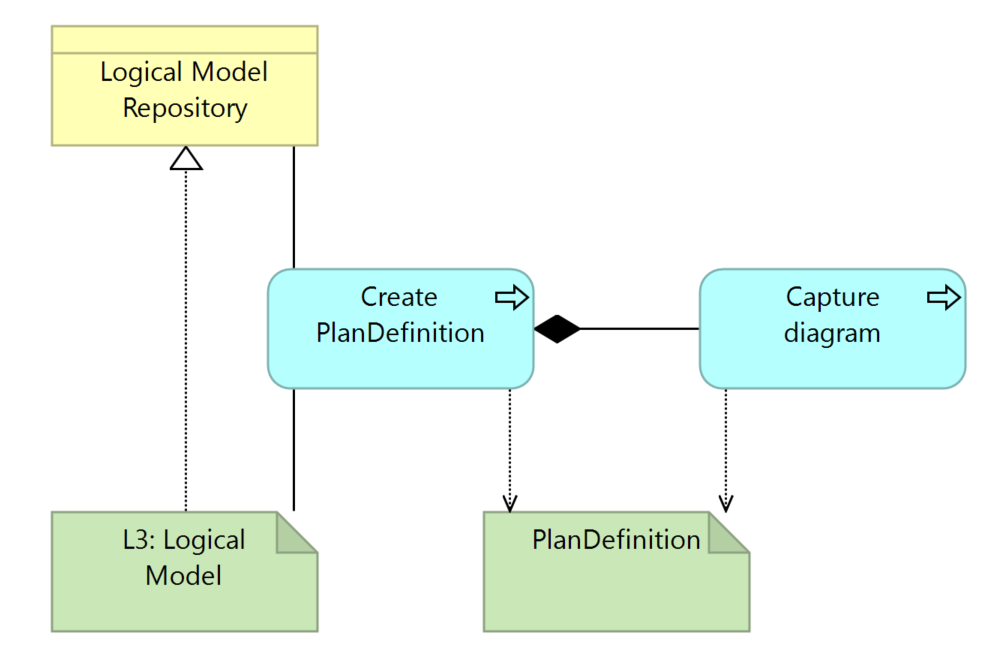

DRAFT SMART Guidelines L3 SOP
0.2.1 - CI Build

DRAFT SMART Guidelines L3 SOP
0.2.1 - CI Build

DRAFT SMART Guidelines L3 SOP, published by TBD. This is not an authorized publication; it is the continuous build for version 0.2.1). This version is based on the current content of https://github.com/DigitalSQR/smart-ig-starter-kit and changes regularly. See the Directory of published versions
SMART Guidelines consist of common types of interventions and content. Therefore some profiles for FHIR artifacts share commonalities.
input/profiles or input/fsh/profilesinput/examples or input/fsh/examples
The FHIR profiles are determined by the need for information objects from the definitions:
The L3 author consults the logical models and the business processes to see which profiles are necessary.
The L3 Author shall search the common profiles repository to search for profiles that may exist which either
This search is in related sources - within the the SMART Guidelines ecosystem - or even outside, such as IHE or HL7 or national guidance. In these cases, the L3 author shall apply the necessary validation as the profiles may not meet the expectations or may change without warning.
The recommended priority for the search for existing profiles
search in previous or upcoming releases of FHIR
| Tool | Usage | Doc |
|---|---|---|
| Sushi | Profiles can be authored in FSH syntax | HL7 Spec Sushi Documentation |